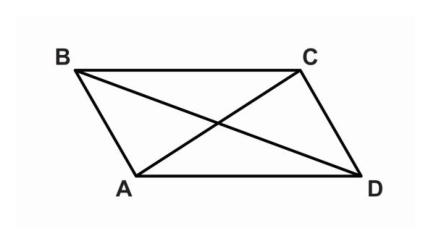
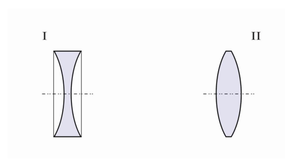
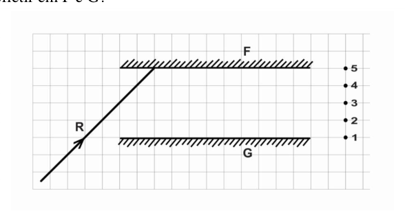
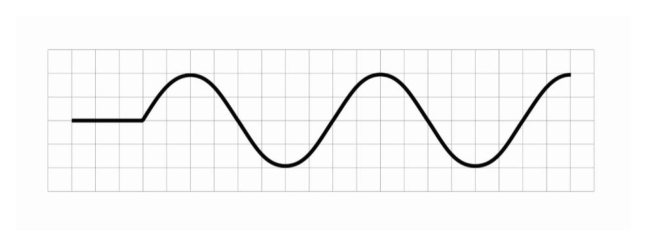
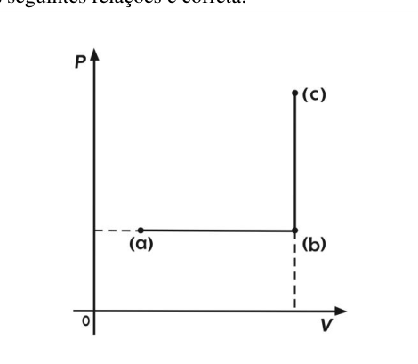

(Exclusiva da 1ª série) Considerando que o conjunto formado pelo satélite e pelo foguete lançador possua massa de kg e seja impulsionado por uma força de N, sendo o sentido de lançamento desse foguete perpendicular ao solo, podemos afirmar acertadamente que a aceleração transmitida ao conjunto pela força resultante, nesse momento inicial de decolagem, vale aproximadamente (desconsidere a resistência do ar e adote m/s²):
- A. 50,0 km/s²
- B. 29,0 km/s²
- C. 5,0 km/s²
- D. 40,0 km/s²
- E. 4,0 km/s²
Topic: Newtonian Mechanics Metodi: Free-Body Diagram, Kinematic Equations Competenze: Physical Reasoning, Mathematical Modeling Objects: Satellite Fonte: Testo (PDF) — p.2
(Esclusivo della prima serie) Considerando che il gruppo formato da satellite e da razzo lanciatore ha una massa di kg e è spinto da una forza di N, e che il senso di lancio di questo razzo è perpendicolare al suolo, possiamo affermare con precisione che l’accelerazione trasmessa al gruppo dalla forza risultante, in questo momento iniziale di decollo, vale approssimativamente (non si considera la resistenza dell’aria e si adopta m/s2):
- A. 50,0 km/s²
- B. 29,0 km/s²
- C. 5,0 km/s²
- D. 40,0 km/s²
- E. 4,0 km/s²
Topic: Newtonian Mechanics Metodi: Free-Body Diagram, Kinematic Equations Competenze: Physical Reasoning, Mathematical Modeling Objects: Satellite Fonte: Testo (PDF) — p.2
(Exclusive to the 1st series) Since the set of the satellite and launch rocket has a mass of kg and is propelled by a force of N, and the direction of launch of that rocket is perpendicular to the ground, we can correctly state that the acceleration transmitted to the set by the resulting force at this initial take-off time is approximately (disregarding air resistance and adopting m/s2):
- A. 50,0 km/s²
- B. 29,0 km/s²
- C. 5,0 km/s²
- D. 40,0 km/s²
- E. 4,0 km/s²
Topic: Newtonian Mechanics Metodi: Free-Body Diagram, Kinematic Equations Competenze: Physical Reasoning, Mathematical Modeling Objects: Satellite Fonte: Testo (PDF) — p.2
(Exclusiva da 1ª série) Ainda sobre a questão anterior podemos afirmar acertadamente que o trabalho realizado, em Joules, pela força resultante nos primeiros 2,0 km de sua decolagem, vale aproximadamente (considere m/s² e despreze todas as resistências existentes e a perda de massa devido à queima de combustível):
- A.
- B.
- C.
- D.
- E.
Topic: Newtonian Mechanics, Conservation of Energy Metodi: Energy Conservation Method, Kinematic Equations Competenze: Mathematical Modeling, Physical Reasoning Objects: — Fonte: Testo (PDF) — p.2
(Esclusiva della prima serie) Anche sulla questione precedente possiamo affermare con certezza che il lavoro svolto a Joules, per la forza risultante dai primi 2,0 km di decollo, vale approssimativamente (considerare m/s2 e disprezzare tutte le resistenze esistenti e la perdita di massa dovuta alla combustione del combustibile):
- A.
- B.
- C.
- D.
- E.
Topic: Newtonian Mechanics, Conservation of Energy Metodi: Energy Conservation Method, Kinematic Equations Competenze: Mathematical Modeling, Physical Reasoning Objects: — Fonte: Testo (PDF) — p.2
(Exclusive to the 1st series) Further to the above question we can correctly state that the work done on Joules by the force resulting from the first 2.0 km of takeoff is worth approximately (consider m/s2 and disregard all existing resistance and mass loss due to fuel burning):
- A.
- B.
- C.
- D.
- E.
Topic: Newtonian Mechanics, Conservation of Energy Metodi: Energy Conservation Method, Kinematic Equations Competenze: Mathematical Modeling, Physical Reasoning Objects: — Fonte: Testo (PDF) — p.2
(Exclusiva da 1ª série) Um corpo com 30,0 N de peso repousa sobre uma superfície lisa e horizontal. Em dado instante, age sobre ele uma única força constante, com direção paralela à superfície. Após 1,5 s de ação da força, o corpo apresenta uma velocidade de 18,0 m/s. Adotando m/s², qual a intensidade dessa força, em Newtons:
- A. 27,0
- B. 18,0
- C. 9,0
- D. 72,0
- E. 36,0
Topic: Newtonian Mechanics Metodi: Free-Body Diagram, Kinematic Equations Competenze: Mathematical Modeling, Physical Reasoning Objects: Block Fonte: Testo (PDF) — p.2
Un corpo di 30 N di peso si posa su una superficie liscia e orizzontale. In un istante, su di lui agisce una sola forza costante, in direzione parallela alla superficie. Dopo 1,5 secondi di forza, il corpo si sta muovendo a 18,0 m/s. Adottando m/s2, come intensità di questa forza, a Newtons:
- A. 27,0
- B. 18,0
- C. 9,0
- D. 72,0
- E. 36,0
Topic: Newtonian Mechanics Metodi: Free-Body Diagram, Kinematic Equations Competenze: Mathematical Modeling, Physical Reasoning Objects: Block Fonte: Testo (PDF) — p.2
(Exclusive to the 1st series) A body weighing 30.0 N rests on a flat, horizontal surface. At any given moment, a single constant force acts on it, with direction parallel to the surface. After 1.5 seconds of force action, the body has a speed of 18.0 m/s. Taking m/s2, as the intensity of this force, in Newtons:
- A. 27,0
- B. 18,0
- C. 9,0
- D. 72,0
- E. 36,0
Topic: Newtonian Mechanics Metodi: Free-Body Diagram, Kinematic Equations Competenze: Mathematical Modeling, Physical Reasoning Objects: Block Fonte: Testo (PDF) — p.2
(Exclusiva da 1ª série) Para o exemplo anterior, considere que a superfície seja rugosa com um coeficiente de atrito cinético igual a 0,2. Para as mesmas condições de velocidade e tempo, qual a intensidade da força aplicada no corpo, em Newtons?
- A. 27,0
- B. 36,0
- C. 72,0
- D. 42,0
- E. 18,0
Topic: Newtonian Mechanics Metodi: Free-Body Diagram, Kinematic Equations Competenze: Mathematical Modeling, Physical Reasoning Objects: Block Fonte: Testo (PDF) — p.3
(Special 1 Series) Per l’esempio precedente, considerate che la superficie sia rugosa con un coefficiente di attrito cinetico pari a 0,2. Per le stesse condizioni di velocità e tempo, qual è l’intensità della forza applicata al corpo, a Newtons?
- A. 27,0
- B. 36,0
- C. 72,0
- D. 42,0
- E. 18,0
Topic: Newtonian Mechanics Metodi: Free-Body Diagram, Kinematic Equations Competenze: Mathematical Modeling, Physical Reasoning Objects: Block Fonte: Testo (PDF) — p.3
(Exclusive to the 1st series) For the example above, consider that the surface is rough with a kinetic friction coefficient of 0,2. For the same conditions of speed and time, what is the intensity of force applied to the body in Newtons?
- A. 27,0
- B. 36,0
- C. 72,0
- D. 42,0
- E. 18,0
Topic: Newtonian Mechanics Metodi: Free-Body Diagram, Kinematic Equations Competenze: Mathematical Modeling, Physical Reasoning Objects: Block Fonte: Testo (PDF) — p.3
(Exclusiva da 1ª série) Na edição do livro Philosophiae Naturalis Principia Mathematica, em 1687, Isaac Newton lança as leis do movimento, criando uma ciência quantitativa para a dinâmica. Dentre elas, destacamos a terceira lei que diz:
“Para cada ação existe sempre uma reação igual e contrária: ou as ações recíprocas de dois corpos um sobre o outro são sempre iguais e dirigidas para partes contrárias”.
Para exemplificar essa lei, o Professor Physicson lançou o seguinte desafio imaginário aos seus alunos:
- O homem diz ao seu cavalo atrelado a uma carroça com rodas: “vai, anda…”
- O cavalo responde: “Não posso. A terceira lei de Newton diz que a carroça exercerá uma força sobre mim igual e oposta à força que eu exerço sobre ela, portanto não consigo movimentá-la”.
Como você responderia, considerando que o cavalo e a carroça formam um único sistema?
- A. Você está errado, pois a força que o solo exerce sobre as patas do cavalo são maiores que a força que o solo exerce sobre as rodas da carroça;
- B. Você está errado, pois quem gera seu movimento é a força gravitacional que atua sobre você, favorável ao movimento;
- C. Você está errado, pois apesar das forças de ação e reação serem aplicadas em corpos diferentes, elas se anulam;
- D. Você está certo, pois apesar das forças de ação e reação serem aplicadas em corpos diferentes, elas se anulam;
- E. Você está errado, pois a terceira lei de Newton não se aplica a este caso.
Topic: Newtonian Mechanics Metodi: Free-Body Diagram, Physical Modeling Competenze: Physical Reasoning, Diagrammatic Reasoning Objects: Cart, Wheel Fonte: Testo (PDF) — p.3
(Esclusiva della prima serie) Nell’edizione del libro Philosophiae Naturalis Principia Mathematica del 1687, Isaac Newton lancia le leggi del movimento, creando una scienza quantitativa per la dinamica. Tra queste, la terza legge è:
“Per ogni azione c’è sempre una reazione uguale e contraria: o le azioni reciproche di due corpi l’uno sull’altro sono sempre uguali e dirette verso parti opposte”.
Per esemplificare questa legge, il professor Physicson lanciò la seguente sfida immaginaria ai suoi studenti:
- L’uomo dice al suo cavallo, incastrato in un carro a ruote: “Vai, cammina”…
- Il cavallo risponde: “Non posso. La terza legge di Newton dice che la carrozza eserciterà una forza su di me pari e opposta alla forza che io esercito su di essa, quindi non posso muoverla”.
Come risponderebbe, considerando che il cavallo e la carrozza formano un unico sistema?
- **A.**Siate sbagliati, perché la forza che il terreno esercita sulle gambe del cavallo è maggiore della forza che il terreno esercita sulle ruote del carro;
- MSK1/>B. Sei sbagliato, perché ciò che genera il tuo movimento è la forza gravitazionale che agisce su di te, favorevole al movimento;
- MSK1 - Sei sbagliato, perché anche se le forze di azione e reazione sono applicate a corpi diversi, si annullano;
- D. Hai ragione, perché anche se le forze di azione e reazione vengono applicate a corpi diversi, si annullano;
- MSK1/>E.**Siate sbagliati, perché la terza legge di Newton non si applica a questo caso.
Topic: Newtonian Mechanics Metodi: Free-Body Diagram, Physical Modeling Competenze: Physical Reasoning, Diagrammatic Reasoning Objects: Cart, Wheel Fonte: Testo (PDF) — p.3
In the 1687 edition of Philosophiae Naturalis Principia Mathematica, Isaac Newton published the laws of motion, creating a quantitative science for dynamics. Among them, we highlight the third law that says:
“For every action there is always an equal and opposite reaction: or the reciprocal actions of two bodies upon each other are always equal and directed to opposite parts”.
To illustrate this law, Professor Physicson presented the following imaginary challenge to his students:
- The man says to his horse, drawn to a wheelchair, “Go, walk”…
- The horse says, “I can’t. Newton’s third law says that the chariot will exert a force on me equal to and opposite to the force I exert on it, so I cannot move it”.
How would you respond, considering that the horse and chariot form a single system?
You are wrong, because the force the ground exerts on the legs of the horse is greater than the force the ground exerts on the wheels of the chariot; You’re wrong, because what generates your movement is the gravitational force acting on you, favorable to the movement. You’re wrong, because even though the forces of action and reaction are applied to different bodies, they cancel each other out. You’re right, because even though the forces of action and reaction are applied to different bodies, they cancel each other out. You’re wrong, because Newton’s third law doesn’t apply to this case.
Topic: Newtonian Mechanics Metodi: Free-Body Diagram, Physical Modeling Competenze: Physical Reasoning, Diagrammatic Reasoning Objects: Cart, Wheel Fonte: Testo (PDF) — p.3
Um bloco de madeira com massa de 1,0 kg, deslizando sobre uma mesa de madeira plana e horizontal, variou sua quantidade de movimento de 0,40 N·s, durante 0,20 s, devido unicamente à força de atrito entre ele e a superfície. Para essa situação, podemos acertadamente dizer que o valor do coeficiente de atrito cinético existente entre as superfícies de contato vale? (adote m/s²)
- A. 0,4
- B. 0,2
- C. 0,1
- D. 0,5
- E. 0,8
Topic: Newtonian Mechanics Metodi: Impulse-Momentum Theorem, Free-Body Diagram Competenze: Mathematical Modeling, Physical Reasoning Objects: Block Fonte: Testo (PDF) — p.4
Un blocco di legno di 1,0 kg di massa, scivolando su una tavola di legno piana e orizzontale, ha variato la sua quantità di movimento di 0,40 N·s per 0,20 s, a causa solo della forza di attrito tra esso e la superficie. In questo caso, possiamo affermare con precisione che vale il valore del coefficiente di attrito cinetico esistente tra le superfici di contatto? (adotta m/s2)
- A. 0,4
- B. 0,2
- C. 0,1
- D. 0,5
- E. 0,8
Topic: Newtonian Mechanics Metodi: Impulse-Momentum Theorem, Free-Body Diagram Competenze: Mathematical Modeling, Physical Reasoning Objects: Block Fonte: Testo (PDF) — p.4
A log of 1,0 kg, sliding over a flat horizontal wooden table, varied its amount of motion by 0,40 N·s for 0,20 s, due solely to the frictional force between it and the surface. For this situation, can we correctly say that the value of the kinetic friction coefficient between the contact surfaces is valid? (adote m/s²)
- A. 0,4
- B. 0,2
- C. 0,1
- D. 0,5
- E. 0,8
Topic: Newtonian Mechanics Metodi: Impulse-Momentum Theorem, Free-Body Diagram Competenze: Mathematical Modeling, Physical Reasoning Objects: Block Fonte: Testo (PDF) — p.4
Sobre uma mesa horizontal o Professor Physicson espalhou cinco blocos idênticos de madeira com massa de 500,0 g e espessura de 10,0 cm cada. A partir daí, ele solicitou de uma aluna que empilhasse sobre a mesa todos os blocos, um após o outro. Ao término dessa tarefa, desprezando-se os atritos existentes e que inicialmente não havia nenhuma superposição entre os blocos, perguntou à turma qual foi o trabalho, em Joules, realizado pela aluna. Acertadamente, eles responderam: (adote m/s²)
- A. 4,0
- B. 2,0
- C. 3,0
- D. 5,0
- E. 1,5
Topic: Newtonian Mechanics, Conservation of Energy Metodi: Energy Conservation Method, Conservation of Energy Competenze: Mathematical Modeling, Physical Reasoning Objects: Block Fonte: Testo (PDF) — p.4
Su un tavolo orizzontale il professor Physicson ha dispersato cinque identici blocchi di legno di massa di 500,0 g e spessore di 10,0 centimetri ciascuno. Da lì, chiese a una studente di mettere tutti i blocchi uno dopo l’altro sul tavolo. Al termine di questo compito, disprezzando gli scontri esistenti e che inizialmente non c’era alcuna sovrapposizione tra i blocchi, chiese alla classe quale fosse il lavoro, a Joules, svolto dalla studentessa. Giusto, hanno risposto: (adotta m/s2)
- A. 4,0
- B. 2,0
- C. 3,0
- D. 5,0
- E. 1,5
Topic: Newtonian Mechanics, Conservation of Energy Metodi: Energy Conservation Method, Conservation of Energy Competenze: Mathematical Modeling, Physical Reasoning Objects: Block Fonte: Testo (PDF) — p.4
On a horizontal table Professor Physicson spread five identical blocks of wood with a mass of 500.0 g and a thickness of 10.0 cm each. From there, he asked one student to stack all the blocks on the table, one after the other. At the end of this task, dismissing the existing friction and the fact that initially there was no overlap between the blocks, he asked the class what work the student had done in Joules. Acertadamente, eles responderam: (adote m/s²)
- A. 4,0
- B. 2,0
- C. 3,0
- D. 5,0
- E. 1,5
Topic: Newtonian Mechanics, Conservation of Energy Metodi: Energy Conservation Method, Conservation of Energy Competenze: Mathematical Modeling, Physical Reasoning Objects: Block Fonte: Testo (PDF) — p.4
Muitos anos antes do nascimento de Isaac Newton (1643–1727) o grande pintor e cientista italiano Leonardo da Vinci (1452–1519) afirmou: “Se uma força desloca certo corpo durante um determinado intervalo de tempo a certa distância, esta mesma força deslocará a metade deste corpo nesta mesma distância em duas vezes menos tempo”.
Você concorda com essa afirmação?
- A. Não, mas em vezes menos tempo;
- B. Sim, mas em 0,5 vezes menos tempo;
- C. Sim, mas em 4 vezes menos tempo;
- D. Não, mas em vezes mais tempo;
- E. Não, mas em 0,5 vezes mais tempo.
Topic: Newtonian Mechanics Metodi: Kinematic Equations, Dimensional Analysis Competenze: Physical Reasoning, Mathematical Modeling Objects: — Fonte: Testo (PDF) — p.4
Molti anni prima della nascita di Isaac Newton (16431727), il grande pittore e scienziato italiano Leonardo da Vinci (14521519) affermò: “Se una forza sposta un certo corpo per un certo intervallo di tempo a una certa distanza, questa stessa forza sposta metà di questo corpo a questa stessa distanza in due volte meno tempo”.
Accordi con questa affermazione?
- A. No, ma in volte meno tempo;
- B. Sì, ma in 0,5 volte meno tempo;
- C. Sì, ma in 4 volte meno tempo;
- D. No, ma in volte più a lungo;
- No, ma in 0,5 volte di più.
Topic: Newtonian Mechanics Metodi: Kinematic Equations, Dimensional Analysis Competenze: Physical Reasoning, Mathematical Modeling Objects: — Fonte: Testo (PDF) — p.4
Many years before Isaac Newton’s birth (16431727), the great Italian painter and scientist Leonardo da Vinci (14521519) stated: “If a force moves a body over a certain time interval to a certain distance, that same force will move half that body at that same distance in twice as little time”.
Do you agree with that statement?
- **A ** No, but in times less time;
- B. Yes, but in 0.5 times less time;
- Yes, but in 4 times less time;
- D No, but at times longer;
- No, but in 0.5 times as long.
Topic: Newtonian Mechanics Metodi: Kinematic Equations, Dimensional Analysis Competenze: Physical Reasoning, Mathematical Modeling Objects: — Fonte: Testo (PDF) — p.4
Dois corpos, A e B, de massas diferentes () foram lançados verticalmente para cima com velocidades iniciais diferentes. Um deles (A) atingiu uma altura quatro vezes maior do que o outro (B). Desprezando as resistências impostas ao movimento, quantas vezes foi a sua velocidade inicial superior à do outro?
- A.
- B.
- C.
- D.
- E.
Topic: Newtonian Mechanics, Conservation of Energy Metodi: Kinematic Equations, Energy Conservation Method Competenze: Mathematical Modeling, Physical Reasoning Objects: Projectile Fonte: Testo (PDF) — p.5
Due corpi, A e B, di diverse masse () sono stati lanciati verticalmente verso l’alto con velocità iniziali diverse. Uno di loro (A) ha raggiunto un’altezza quattro volte superiore all’altro (B). Scommettiamo le resistenze imposte al movimento, quante volte la sua velocità iniziale era superiore a quella dell’altro?
- A.
- B.
- C.
- D.
- E.
Topic: Newtonian Mechanics, Conservation of Energy Metodi: Kinematic Equations, Energy Conservation Method Competenze: Mathematical Modeling, Physical Reasoning Objects: Projectile Fonte: Testo (PDF) — p.5
Two bodies, A and B, of different masses () were launched vertically upwards at different initial speeds. One of them (A) reached a height four times higher than the other (B). Despite the resistance to movement, how many times was your initial speed higher than the other?
- A.
- B.
- C.
- D.
- E.
Topic: Newtonian Mechanics, Conservation of Energy Metodi: Kinematic Equations, Energy Conservation Method Competenze: Mathematical Modeling, Physical Reasoning Objects: Projectile Fonte: Testo (PDF) — p.5
Durante uma aula sobre queda livre de corpos próximos à superfície da terra, um dos alunos do Professor Physicson perguntou:
“Professor, qual o peso equivalente que uma pedrinha de massa 0,5 kg teria ao chegar ao solo, caindo em queda livre do 5° andar de um edifício?”
Para responder a essa pergunta, o Professor escreveu no quadro quatro possíveis respostas:
I. O peso da pedra não varia pelo fato de ela estar em repouso ou caindo; II. Considerando a altura total igual a 10,0 m, seria de 50,0 N; III. O peso da pedra varia conforme o solo, se ele é fofo ou duro; IV. A força que a pedra exerce sobre o solo depende se ele é fofo ou duro.
Analisando as afirmações, podemos acertadamente afirmar que:
- A. Somente III e IV estão corretas;
- B. Somente II e III estão corretas;
- C. Somente I e IV estão corretas;
- D. Todas estão corretas;
- E. Todas estão erradas.
Topic: Newtonian Mechanics Metodi: Free-Body Diagram, Physical Modeling Competenze: Physical Reasoning, Diagrammatic Reasoning Objects: — Fonte: Testo (PDF) — p.5
Durante un corso di lezione sulla caduta libera di corpi vicino alla superficie terrestre, uno degli studenti del Professor Physicson ha chiesto:
“Professore, che peso equivalente avrebbe un’artiglietta di massa di circa 5 chili al momento di cadere in caduta da un piano di un edificio?”
Per rispondere a questa domanda, il Professore ha scritto nel quadro quattro possibili risposte:
I. Il peso della pietra non varia dal fatto che sia in riposo o cadente; II. Considerando l’altezza totale pari a 10,0 m, sarebbe di 50,0 N; III. Il peso della pietra varia a seconda del suolo, se è dolce o duro; IV. La forza che la pietra esercita sul suolo dipende dal fatto che sia dolce o dura.
L’analisi delle affermazioni ci permette di affermare correttamente che:
- A. Solo III e IV sono corretti;
- B. Solo II e III sono corretti;
- C. Solo I e IV sono corretti;
- D. Tutti corretti;
- MSK1 - Tutti sbagliati.
Topic: Newtonian Mechanics Metodi: Free-Body Diagram, Physical Modeling Competenze: Physical Reasoning, Diagrammatic Reasoning Objects: — Fonte: Testo (PDF) — p.5
During a lecture on free falling bodies near the earth’s surface, one of Professor Physicson’s students asked:
“Professor, what is the equivalent weight of a 0.5 kg stone when it falls to the ground in free fall from the floor of a building?”
To answer that question, the Professor wrote down four possible answers on the board:
I. The weight of the stone does not vary by the fact that it is resting or falling; II. Considering the total height equal to 10,0 m, it would be 50,0 N; The Commission shall adopt implementing acts. The weight of the stone varies according to the soil, whether it is soft or hard; IV. The force the stone exertes on the soil depends on whether it is soft or hard.
The Commission has therefore decided to take the necessary measures to ensure that the Commission is able to take the necessary measures to ensure that the Commission is able to take the necessary measures to ensure that the measures are implemented in a timely manner.
- A. Only III and IV are correct;
- B. Only II and III are correct;
- C. Only I and IV are correct;
- D. All are correct;
- They’re all wrong.
Topic: Newtonian Mechanics Metodi: Free-Body Diagram, Physical Modeling Competenze: Physical Reasoning, Diagrammatic Reasoning Objects: — Fonte: Testo (PDF) — p.5
Durante as aulas sobre vetores, o Professor Physicson desenhou no quadro a figura exposta abaixo, onde os segmentos de retas AB, BC, CD, DA, AC e BD representam vetores, de tal forma que prevalece o sentido, ou seja, . Assim, podemos representar o desenho abaixo pela soma dos vetores, EXCETO em:
- A.
- B.
- C.
- D.
- E.

Quadrilateral ABCD with diagonalsTopic: Newtonian Mechanics Metodi: Vector Decomposition, Superposition Principle Competenze: Mathematical Modeling, Diagrammatic Reasoning Objects: — Fonte: Testo (PDF) — p.6
Durante le lezioni sui vettori, il professor Physicson ha disegnato nella tabella la figura qui sotto, dove i segmenti di reticola AB, BC, CD, DA, AC e BD rappresentano vettori, in modo che prevale il senso, cioè . Quindi possiamo rappresentare il disegno di seguito con la somma dei vettori, eccetto in:
- A.
- B.
- C.
- D.
- E.
Quadrilaterale ABCD con diagonali
Topic: Newtonian Mechanics Metodi: Vector Decomposition, Superposition Principle Competenze: Mathematical Modeling, Diagrammatic Reasoning Objects: — Fonte: Testo (PDF) — p.6
During the vector classes Professor Physicson drew the figure below in the table, where the straight segments AB, BC, CD, DA, AC and BD represent vectors, so that the meaning, i.e. , prevails. So we can represent the drawing below by the sum of the vectors, EXCEPT in:
- A.
- B.
- C.
- D.
- E.
The following table shows the results of the calculations:
Topic: Newtonian Mechanics Metodi: Vector Decomposition, Superposition Principle Competenze: Mathematical Modeling, Diagrammatic Reasoning Objects: — Fonte: Testo (PDF) — p.6
Considere as seguintes situações do cotidiano:
I. Um carro, subindo uma rua de forte declive, em movimento retilíneo e uniforme; II. Um carro, percorrendo uma pista circular, com movimento uniforme; III. Um menino, lançando uma bola vertical para cima e atingindo o ponto mais alto de sua trajetória.
Analise essas informações e identifique em qual(is) dela(s) a força resultante é nula:
- A. Somente em III;
- B. Somente em II;
- C. Em I e II;
- D. Em I, II e III;
- E. Somente em I
Topic: Newtonian Mechanics Metodi: Free-Body Diagram, Physical Modeling Competenze: Physical Reasoning, Diagrammatic Reasoning Objects: Ball Fonte: Testo (PDF) — p.6
Considerate le seguenti situazioni di tutti i giorni:
I. Una macchina, salire su una strada di forte declino, in movimento reticolo e uniforme; II. Una macchina che percorre una pista circolare, con movimento uniforme; III. Un bambino, lanciando una palla verticale verso l’alto e raggiungendo il punto più alto della sua traccia.
Analizzare queste informazioni e identificare in quale di esse la forza risultante è nulla:
- A. Solo in III;
- B. Solo in II;
- C. Em I e II;
- D. in I, II e III;
- E. Solo in I
Topic: Newtonian Mechanics Metodi: Free-Body Diagram, Physical Modeling Competenze: Physical Reasoning, Diagrammatic Reasoning Objects: Ball Fonte: Testo (PDF) — p.6
Consider the following everyday situations:
I. A car, climbing a steep slope, in straight and uniform motion; II. A car running on a circular track, with uniform movement; The Commission shall adopt implementing acts. A boy, throwing a vertical ball upwards and reaching the highest point of his trajectory.
Analyze this information and identify which of these is zero force:
- A. Only in III;
- B. In II only;
- C. Em I e II;
- D. In I, II and III;
- E. In I only
Topic: Newtonian Mechanics Metodi: Free-Body Diagram, Physical Modeling Competenze: Physical Reasoning, Diagrammatic Reasoning Objects: Ball Fonte: Testo (PDF) — p.6
Nas figuras abaixo temos dois tipos de lentes delgadas e polidas, nas quais os erros de formação de imagens ou aberrações são desprezíveis.
Dentre as lentes citadas, identifique na sequência a lente utilizada para a correção da miopia, lente semelhante ao nosso cristalino e lente usada numa lupa.
- A. I, I e I
- B. I, I e II
- C. II, II e I
- D. II, I e II
- E. I, II e II

Two types of thin lenses I and II
Labeled diverging and converging lens diagramsTopic: Geometric Optics Metodi: Ray Tracing, Thin Lens & Mirror Equation Competenze: Physical Reasoning, Diagrammatic Reasoning Objects: Lens Fonte: Testo (PDF) — p.6
Le immagini che seguono ci presentano due tipi di lenti sottili e lucide, in cui gli errori di formazione delle immagini o le aberrazioni sono sconsiderati.
Tra i lenti citati, indicate in seguito il lente usato per correggere la miopia, un lente simile al nostro cristallino e un lente usato in una lente.
- A. I, I e I
- B. I, I e II
- C. II, II e I
- D. II, I e II
- E. I, II e II
Two types of thin lenses I and II
Labeled diverging and converging lens diagrams
Topic: Geometric Optics Metodi: Ray Tracing, Thin Lens & Mirror Equation Competenze: Physical Reasoning, Diagrammatic Reasoning Objects: Lens Fonte: Testo (PDF) — p.6
In the figures below, we have two types of thin, polished lenses, in which image formation errors or aberrations are despicable.
Among the lenses mentioned, please identify the lens used to correct myopia, a lens similar to our lens, and a lens used in a magnifying glass.
- A. I, I e I
- B. I, I e II
- C. II, II e I
- D. II, I e II
- E. I, II e II
Two types of thin lenses I and II
Labelled diverging and converging lens diagrams
Topic: Geometric Optics Metodi: Ray Tracing, Thin Lens & Mirror Equation Competenze: Physical Reasoning, Diagrammatic Reasoning Objects: Lens Fonte: Testo (PDF) — p.6
Na figura a seguir, F e G são espelhos planos e paralelos entre si e R é um raio de luz coerente que incide sobre o espelho F. Por qual dos pontos 1, 2, 3, 4 ou 5 passa o raio R depois de se refletir em F e G?
- A. 2
- B. 1
- C. 3
- D. 5
- E. 4

Parallel mirrors F and G with ray RTopic: Geometric Optics Metodi: Ray Tracing, Superposition Principle Competenze: Diagrammatic Reasoning, Physical Reasoning Objects: Mirror Fonte: Testo (PDF) — p.7
Nella figura seguente, F e G sono specchi piani e paralleli tra loro e R è un raggio di luce coerente che incide sul specchio F. Quale dei punti 1, 2, 3, 4 o 5 passa il raggio R dopo essere stato riflesso in F e G?
- A. 2
- B. 1
- C. 3
- D. 5
- E. 4
*F e G mirror paralleli con ray R *
Topic: Geometric Optics Metodi: Ray Tracing, Superposition Principle Competenze: Diagrammatic Reasoning, Physical Reasoning Objects: Mirror Fonte: Testo (PDF) — p.7
In the figure below, F and G are parallel flat mirrors, and R is a coherent beam of light that hits the mirror F. Which of the points 1, 2, 3, 4 or 5 passes the radius R after reflecting on F and G?
- A. 2
- B. 1
- C. 3
- D. 5
- E. 4
*Parallel mirrors F and G with ray R *
Topic: Geometric Optics Metodi: Ray Tracing, Superposition Principle Competenze: Diagrammatic Reasoning, Physical Reasoning Objects: Mirror Fonte: Testo (PDF) — p.7
Na figura a seguir está representada uma onda periódica que se propaga ao longo de fio preso em uma de suas extremidades. Sendo sua amplitude e seu comprimento de onda, qual é o valor da relação ?
- A. 1
- B. 4
- C. 1/4
- D. 8
- E. 1/8
Topic: Oscillations & Waves Metodi: Wave Equation, Simple Harmonic Motion Analysis Competenze: Mathematical Modeling, Diagrammatic Reasoning Objects: String Fonte: Testo (PDF) — p.7
La figura seguente rappresenta un’onda periodica che si diffonde lungo un filo attaccato ad una delle sue estremità. Se la sua larghezza è e la sua lunghezza d’onda è , qual è il valore del rapporto ?
- A. 1
- B. 4
- C. 1/4
- D. 8
- E. 1/8
Topic: Oscillations & Waves Metodi: Wave Equation, Simple Harmonic Motion Analysis Competenze: Mathematical Modeling, Diagrammatic Reasoning Objects: String Fonte: Testo (PDF) — p.7
The following figure shows a periodic wave propagating along a strand attached to one of its ends. If its amplitude and its wavelength, what is the value of the ratio ?
- A. 1
- B. 4
- C. 1/4
- D. 8
- E. 1/8
Topic: Oscillations & Waves Metodi: Wave Equation, Simple Harmonic Motion Analysis Competenze: Mathematical Modeling, Diagrammatic Reasoning Objects: String Fonte: Testo (PDF) — p.7
O gráfico abaixo representa a pressão () de uma amostra de um gás ideal em função de seu volume (). As temperaturas absolutas da amostra do gás, correspondentes aos pontos (a), (b) e (c) do gráfico, são, respectivamente, , e . Identifique nas proposições qual das seguintes relações é correta:
- A.
- B.
- C.
- D.
- E.

Pressure vs volume graph with points a, b, cTopic: Thermodynamics, Kinetic Theory Metodi: Ideal Gas Law, Thermodynamic Cycle Analysis Competenze: Diagrammatic Reasoning, Mathematical Modeling Objects: Gas Fonte: Testo (PDF) — p.8
Il grafico seguente rappresenta la pressione () di un campione di un gas ideale in funzione del suo volume (). Le temperature assolute del campione di gas corrispondenti ai punti (a), (b) e (c) del grafico sono rispettivamente , e . Indicare in queste proposte quale delle seguenti relazioni è corretta:
- A.
- B.
- C.
- D.
- E.
Grafico di pressione vs volume con punti a, b, c
Topic: Thermodynamics, Kinetic Theory Metodi: Ideal Gas Law, Thermodynamic Cycle Analysis Competenze: Diagrammatic Reasoning, Mathematical Modeling Objects: Gas Fonte: Testo (PDF) — p.8
The graph below represents the pressure () of a sample of an ideal gas by its volume (). The absolute temperatures of the gas sample corresponding to points (a), (b) and (c) of the graph are , and respectively. Identify in the propositions which of the following is correct:
- A.
- B.
- C.
- D.
- E.
Pressure vs volume graph with points a, b, c
Topic: Thermodynamics, Kinetic Theory Metodi: Ideal Gas Law, Thermodynamic Cycle Analysis Competenze: Diagrammatic Reasoning, Mathematical Modeling Objects: Gas Fonte: Testo (PDF) — p.8
Em 1860, J. Maxwell (1831–1879), físico e matemático escocês, publicou na The Philosophical Magazine 19 um trabalho no qual demonstra a formulação do modelo cinético do calor, partindo da hipótese de que as moléculas não estão em repouso, mas possuem energia cinética, e de que a temperatura absoluta de um corpo é determinada pela energia cinética média de suas moléculas. Assim, de acordo com o texto, julgue as proposições a seguir com (V) verdadeira ou (F) falsa:
I. Para uma mesma temperatura absoluta, independentemente das massas molares de cada gás, as moléculas têm energias cinéticas médias iguais; II. A energia cinética média das moléculas de um gás depende, apenas e exclusivamente, das massas moleculares desse gás; III. As moléculas de um gás perfeito possuem movimentos desordenados e, por isso, colidem inelasticamente entre si ou com as paredes do recipiente que as contém.
Assinale a alternativa correta:
- A. V, F, V
- B. V, F, F
- C. F, F, V
- D. V, V, F
- E. F, V, F
Topic: Kinetic Theory, Thermodynamics Metodi: Kinetic Theory of Gases, Statistical Averaging Competenze: Physical Reasoning, Mathematical Modeling Objects: Gas Fonte: Testo (PDF) — p.8
Em 1860, J. Maxwell (1831-1879), fisico e matematico scozzese, pubblicò in The Philosophical Magazine un lavoro nel quale dimostrava la formulazione del modello cinetico del calore partendo dal presupposto che le molecole non fossero a riposo, ma possedessero energia cinetica, e che la temperatura assoluta di un corpo fosse determinata dall’energia cinetica media delle sue molecole. Quindi, secondo il testo, giudicate le seguenti proposizioni con (V) vero o (F) falso:
I. Per la stessa temperatura assoluta, indipendentemente dalle masse molari di ogni gas, le molecole hanno uguali energie cinetiche medie; II. L’energia cinetica media delle molecole di un gas dipende esclusivamente dalle masse molecolari di quel gas; III. Le molecole di un gas perfetto hanno movimenti disordinati e quindi si collidono inelasticamente tra loro o con le pareti del recipiente che le contiene.
Indica l’alternativa corretta:
- A. V, F, V
- B. V, F, F
- C. F, F, V
- D. V, V, F
- E. F, V, F
Topic: Kinetic Theory, Thermodynamics Metodi: Kinetic Theory of Gases, Statistical Averaging Competenze: Physical Reasoning, Mathematical Modeling Objects: Gas Fonte: Testo (PDF) — p.8
Em 1860, J. Maxwell (18311879), a Scottish physicist and mathematician, published in The Philosophical Magazine a paper in which he demonstrated the formulation of the kinetic model of heat, starting from the hypothesis that molecules are not at rest but have kinetic energy, and that the absolute temperature of a body is determined by the average kinetic energy of its molecules. So, according to the text, judge the following sentences as (V) true or (F) false:
I. For the same absolute temperature, regardless of the molar masses of each gas, the molecules have equal average kinetic energies; II. The average kinetic energy of a gas molecule depends solely and exclusively on the molecular masses of that gas; The Commission shall adopt implementing acts. The molecules of a perfect gas have disordered movements and therefore collide inelastically with each other or with the walls of the container that contains them.
Please indicate the correct alternative:
- A. V, F, V
- B. V, F, F
- C. F, F, V
- D. V, V, F
- E. F, V, F
Topic: Kinetic Theory, Thermodynamics Metodi: Kinetic Theory of Gases, Statistical Averaging Competenze: Physical Reasoning, Mathematical Modeling Objects: Gas Fonte: Testo (PDF) — p.8
Analise as proposições a seguir relativas à termodinâmica, verificando se há ou não inadequações em seus enunciados, colocando V (adequado) e F (inadequado):
I. Calor é sinônimo de temperatura; II. Calor é energia térmica em trânsito entre dois ou mais corpos; III. Sempre que um corpo quente aquece um corpo frio, suas temperaturas variam igualmente; IV. Calor específico é uma grandeza que indica o nível de energia das moléculas de um corpo.
A sequência correta das letras V e F, de cima para baixo é:
- A. F, F, F, F
- B. F, V, V, F
- C. V, V, F, F
- D. F, V, F, F
- E. V, V, V, F
Topic: Thermodynamics Metodi: First Law of Thermodynamics, Physical Modeling Competenze: Physical Reasoning, Mathematical Modeling Objects: — Fonte: Testo (PDF) — p.9
Analizzare le seguenti proposte relative alla termodinamica, verificando se ci sono o meno inadequazioni nelle loro affermazioni, inserendo V (adeguato) e F (inadeguato):
I. Calore è sinonimo di temperatura; II. Calore è energia termica in transito tra due o più corpi; III. Ogni volta che un corpo caldo scalda un corpo freddo, le temperature variano ugualmente; IV. Calore specifico è una grandezza che indica il livello di energia delle molecole di un corpo.
La corretta sequenza delle lettere V e F, da cima a fondo, è:
- A. F, F, F, F
- B. F, V, V, F
- C. V, V, F, F
- D. F, V, F, F
- E. V, V, V, F
Topic: Thermodynamics Metodi: First Law of Thermodynamics, Physical Modeling Competenze: Physical Reasoning, Mathematical Modeling Objects: — Fonte: Testo (PDF) — p.9
Analyze the following propositions concerning thermodynamics, to check whether or not there are inadequacies in their statements, placing V (suitable) and F (inappropriate):
I. Heat is synonymous with temperature; II. Heat is thermal energy in transit between two or more bodies; The Commission shall adopt implementing acts. Whenever a hot body warms a cold body, its temperatures vary equally; IV. Specific heat is a quantity that indicates the energy level of a body’s molecules.
The correct sequence of the letters V and F, top to bottom, is:
- A. F, F, F, F
- B. F, V, V, F
- C. V, V, F, F
- D. F, V, F, F
- E. V, V, V, F
Topic: Thermodynamics Metodi: First Law of Thermodynamics, Physical Modeling Competenze: Physical Reasoning, Mathematical Modeling Objects: — Fonte: Testo (PDF) — p.9
Um estudante de certo colégio relatou em sala de aula ter realizado uma experiência em casa, que consistiu em colocar um copo de plástico com água sobre a chama de uma vela e, ao final, constatou que o copo só queimou depois de toda a água ter fervido e evaporado. Intrigados com o fenômeno descrito, seus colegas desejaram saber do professor se o estudante falava a verdade. O professor disse acertadamente que:
- A. Isso é possível, pois a capacidade calorífica da água é maior do que a do plástico;
- B. Isso é impossível de ocorrer, pois o plástico é comburente;
- C. Isso é impossível, pois o plástico tem uma capacidade calorífica maior que a água;
- D. Isso é impossível de ocorrer, pois o plástico se queima antes da água ferver;
- E. Isso é possível até certo ponto, pois se a chama fosse mais intensa, o copo derreteria primeiro.
Topic: Thermodynamics Metodi: First Law of Thermodynamics, Physical Modeling Competenze: Physical Reasoning, Estimation & Approximation Objects: — Fonte: Testo (PDF) — p.9
Un studente di un collegio ha riferito in classe di aver fatto un esperimento a casa, che consisteva nel mettere un bicchiere di plastica con acqua sulla fiamma di una candela e alla fine ha scoperto che il bicchiere bruciava solo dopo che tutta l’acqua si era fervida e evaporata. Interrottati dal fenomeno descritto, i loro colleghi desideravano sapere dal professore se lo studente diceva la verità. Il professore ha detto con giurisprudenza:
- A Questo è possibile perché la capacità calorifica dell’acqua è superiore a quella del plastica;
- B. Questo non può avvenire perché la plastica è combustibile;
- MSK1/>C.** Questo è impossibile, poiché la plastica ha una capacità calorifica maggiore dell’acqua;
- D. Questo non può accadere perché la plastica brucia prima che l’acqua si bolli; Questo è possibile fino a un certo punto, perché se la fiamma fosse più intensa, il bicchiere si scioglierà prima.
Topic: Thermodynamics Metodi: First Law of Thermodynamics, Physical Modeling Competenze: Physical Reasoning, Estimation & Approximation Objects: — Fonte: Testo (PDF) — p.9
A college student reported in a classroom that he had conducted a home experiment in which he placed a plastic glass of water on the flame of a candle and found that the glass only burned after all the water had boiled and evaporated. Intrigued by the phenomenon described, their colleagues wanted to know from the teacher whether the student was telling the truth. The professor rightly said:
- A This is possible because the heat capacity of water is higher than that of plastic;
- B. This is impossible because plastic is combustible;
- This is impossible because plastic has a higher heat capacity than water;
- MSK1/>D This is impossible because the plastic burns before the water boils; This is possible to some extent because if the flame were more intense, the glass would melt first.
Topic: Thermodynamics Metodi: First Law of Thermodynamics, Physical Modeling Competenze: Physical Reasoning, Estimation & Approximation Objects: — Fonte: Testo (PDF) — p.9
Os famosos “potes de barro” são reservatórios feitos de barro cozido e porosos à água, muito usados no interior do nordeste, onde a energia elétrica ainda não chegou, servindo para manter a água sempre fresca, apesar da alta temperatura ambiente. Esse fato pode ser mais bem explicado devido:
- A. Ao processo de evaporação da água residual, via poros, que se acumula na superfície externa do pote, diminuindo a temperatura da água dentro do pote;
- B. Ao fato do barro ser isolante e não deixar que o calor penetre para dentro do pote, mantendo sua temperatura;
- C. À condensação que a água sofre no interior do pote;
- D. Ao processo de liquefação do vapor de água em sua superfície externa, mantendo a água sempre fresca;
- E. Ao fato de ocorrer uma evaporação da água em sua superfície, por um processo exotérmico.
Topic: Thermodynamics Metodi: First Law of Thermodynamics, Physical Modeling Competenze: Physical Reasoning, Estimation & Approximation Objects: Container Fonte: Testo (PDF) — p.10
I famosi “potti di fango” sono serbatoi fatti di argilla cotta e porosi all’acqua, molto usati nell’interno del nord-est, dove l’energia elettrica non è ancora arrivata, servendo per mantenere l’acqua sempre fresca, nonostante le alte temperature ambientali. Questo fatto può essere meglio spiegato a causa di:
- A. Il processo di evaporazione dell’acqua residuale, via poroni, che si accumula sulla superficie esterna del vaso, diminuendo la temperatura dell’acqua all’interno del vaso;
- B. Il fatto che la fango sia isolante e non permetta al calore di penetrare nel vaso, mantenendo la sua temperatura;
- C. La condensazione che l’acqua subisce all’interno del vaso;
- D. Il processo di liquefazione del vapore d’acqua sulla sua superficie esterna, mantenendo l’acqua sempre fresca;
- E. A causa dell’evaporazione dell’acqua sulla sua superficie da un processo esoterico.
Topic: Thermodynamics Metodi: First Law of Thermodynamics, Physical Modeling Competenze: Physical Reasoning, Estimation & Approximation Objects: Container Fonte: Testo (PDF) — p.10
The famous “mud pots” are reservoirs made of boiled mud and water-porous, widely used in the interior of the northeast, where electricity has not yet arrived, serving to keep water always cool despite the high ambient temperature. This fact can be best explained by:
- A. The process of evaporation of waste water via pores, which accumulates on the outer surface of the pot, decreasing the temperature of the water inside the pot;
- B. The fact that the mud is insulating and does not allow heat to enter the pot, keeping its temperature;
- C. The condensation of the water inside the pot;
- D. The process of liquefaction of water vapor on its outer surface, keeping the water always fresh;
- E. The evaporation of water on its surface by an exothermic process.
Topic: Thermodynamics Metodi: First Law of Thermodynamics, Physical Modeling Competenze: Physical Reasoning, Estimation & Approximation Objects: Container Fonte: Testo (PDF) — p.10
Imagine que um estudante disponha de dois pêndulos idênticos (P1 e P2), dentro de um sistema de referência inercial, oscilando com a mesma amplitude. P1 está acoplado a um sistema rígido, em repouso, oscilando com um período igual a 1,0 s e P2 está acoplado a um carrinho que se move, em trajetória retilínea, com uma velocidade escalar constante e igual a 2,0 m/s. Qual é, em segundos, o período de oscilação de P2?
- A. 2,0
- B. Zero
- C. 1,0
- D. 0,5
- E. 4,0
Topic: Oscillations & Waves, Newtonian Mechanics Metodi: Simple Harmonic Motion Analysis, Physical Modeling Competenze: Physical Reasoning, Mathematical Modeling Objects: Pendulum, Cart Fonte: Testo (PDF) — p.10
Immaginate che uno studente abbia due pendoli identici (P1 e P2) all’interno di un sistema di riferimento inerziale oscillante con la stessa larghezza. P1 è collegato a un sistema rigido, a riposo, oscillante per un periodo di 1,0 s e P2 è collegato a un carrello che si muove in rotta reticolare, con una velocità di scala costante e pari a 2,0 m/s. Qual è, in secondi, il periodo di oscillazione di P2?
- A. 2,0
- B. Zero
- C. 1,0
- D. 0,5
- E. 4,0
Topic: Oscillations & Waves, Newtonian Mechanics Metodi: Simple Harmonic Motion Analysis, Physical Modeling Competenze: Physical Reasoning, Mathematical Modeling Objects: Pendulum, Cart Fonte: Testo (PDF) — p.10
Imagine that a student has two identical pendulums (P1 and P2) within an inertial reference system, oscillating at the same amplitude. P1 is coupled to a rigid system at rest, oscillating for a period of 1.0 s and P2 is coupled to a wagon moving in a reticulated trajectory at a constant scalar speed of 2.0 m/s. What is the P2 oscillation period in seconds?
- A. 2,0
- **B ** Zero
- C. 1,0
- D. 0,5
- E. 4,0
Topic: Oscillations & Waves, Newtonian Mechanics Metodi: Simple Harmonic Motion Analysis, Physical Modeling Competenze: Physical Reasoning, Mathematical Modeling Objects: Pendulum, Cart Fonte: Testo (PDF) — p.10
Considerando que um anel de cobre a 25°C, cujo coeficiente de dilatação térmica linear é constante e igual a °C, possui um diâmetro interno igual a 10,0 cm e externo igual a 12,0 cm, determine a variação entre esses diâmetros quando o anel atingir uma temperatura de 275°C.
- A. 0,208 cm
- B. 0,098 cm
- C. 0,108 cm
- D. 0,008 cm
- E. 1,098 cm
Topic: Thermodynamics, Elasticity & Materials Metodi: Physical Modeling, Dimensional Analysis Competenze: Mathematical Modeling, Physical Reasoning Objects: — Fonte: Testo (PDF) — p.11
Considerando che un anello di rame 25°C, il cui coefficiente di dilatazione termico lineare è costante ed è pari a °C, ha un diametro interno pari a 10,0 cm e un diametro esterno pari a 12,0 cm, determina la variazione tra questi diametri quando l’anello raggiunge una temperatura di 275°C.
- A. 0,208 cm
- B. 0,098 cm
- C. 0,108 cm
- D. 0,008 cm
- E. 1,098 cm
Topic: Thermodynamics, Elasticity & Materials Metodi: Physical Modeling, Dimensional Analysis Competenze: Mathematical Modeling, Physical Reasoning Objects: — Fonte: Testo (PDF) — p.11
Whereas a copper ring of 25°C, with a constant linear thermal dilation coefficient of °C, has an internal diameter of 10,0 cm and an external diameter of 12,0 cm, determines the variation between these diameters when the ring reaches a temperature of 275°C.
- A. 0,208 cm
- B. 0,098 cm
- C. 0,108 cm
- D. 0,008 cm
- E. 1,098 cm
Topic: Thermodynamics, Elasticity & Materials Metodi: Physical Modeling, Dimensional Analysis Competenze: Mathematical Modeling, Physical Reasoning Objects: — Fonte: Testo (PDF) — p.11
Durante uma aula sobre uma colisão frontal entre duas bolas de sinuca (não elásticas), com mesma massa e mesmo tamanho, várias indagações foram feitas pelos alunos. Dentre elas, destacamos quatro:
I. A soma das energias cinéticas das duas bolas se conserva; II. A soma dos módulos das quantidades de movimento das bolas se conserva (isto é, tem o mesmo valor antes e após o choque); III. A soma vetorial das quantidades de movimento das duas bolas, assim como a soma das energias cinéticas das mesmas, separadamente se conservam; IV. As variações das velocidades das duas bolas são de módulos iguais.
Analisando as afirmações, podemos acertadamente afirmar que:
- A. Todas são falsas;
- B. Todas estão corretas;
- C. Apenas I, II e III estão corretas;
- D. Apenas II e III estão corretas;
- E. Apenas I e II estão corretas.
Topic: Newtonian Mechanics, Conservation of Momentum Metodi: Conservation of Momentum, Impulse-Momentum Theorem Competenze: Physical Reasoning, Mathematical Modeling Objects: Ball Fonte: Testo (PDF) — p.11
Durante un corso su una collisione frontale tra due palline di sinuca (non elastica), con la stessa massa e dimensione, sono state fatte diverse indagini dagli studenti. Di queste, abbiamo evidenziato quattro:
I. la somma delle energie cinetiche delle due palle si conserva; II. La somma dei moduli delle quantità di movimento delle palle si conserva (cioè, ha lo stesso valore prima e dopo lo shock); III. la somma vetoriale delle quantità di movimento delle due palle, nonché la somma delle loro energie cinetiche, sono conservate separatamente; IV. Le variazioni delle velocità delle due palle sono di moduli uguali.
L’analisi delle affermazioni ci permette di affermare correttamente che:
- A. Tutte false;
- B. Tutti corretti;
- C. Solo I, II e III sono corretti;
- D. Solo II e III sono corretti;
- E. Solo I e II sono corretti.
Topic: Newtonian Mechanics, Conservation of Momentum Metodi: Conservation of Momentum, Impulse-Momentum Theorem Competenze: Physical Reasoning, Mathematical Modeling Objects: Ball Fonte: Testo (PDF) — p.11
During a lecture on a frontal collision between two sinuous (non-elastic) balls, of the same mass and size, several inquiries were made by the students. Of these, we highlight four:
I. The sum of the kinetic energies of the two balls is conserved; II. The sum of the modules of the balls’ motion quantities is retained (i.e. it has the same value before and after the impact); The Commission shall adopt implementing acts. The vector sum of the quantities of motion of the two balls and the sum of their kinetic energies shall be kept separately; IV. The variations in the velocities of the two balls are of equal modules.
The Commission has therefore decided to take the necessary measures to ensure that the Commission is able to take the necessary measures to ensure that the Commission is able to take the necessary measures to ensure that the measures taken are not distorted.
- All of them are fake.
- B. All are correct;
- C. Only I, II and III are correct;
- D. Only II and III are correct;
- E. Only I and II are correct.
Topic: Newtonian Mechanics, Conservation of Momentum Metodi: Conservation of Momentum, Impulse-Momentum Theorem Competenze: Physical Reasoning, Mathematical Modeling Objects: Ball Fonte: Testo (PDF) — p.11
Considere as seguintes informações sobre a segunda lei da Termodinâmica:
I. A eficiência de uma máquina térmica de Carnot depende somente das duas temperaturas com que ela trabalha; II. Numa máquina térmica reversível, a absorção e a liberação de calor devem ser realizadas isotermicamente; III. Numa máquina térmica, o calor cedido a um gás pode apenas em parte ser usado para realizar trabalho mecânico.
De acordo com as informações, podemos acertadamente afirmar que:
- A. Todas estão falsas;
- B. Somente I e II estão corretas;
- C. Somente I e III estão corretas;
- D. Somente a I está correta;
- E. Todas estão corretas.
Topic: Thermodynamics Metodi: Thermodynamic Cycle Analysis, First Law of Thermodynamics Competenze: Physical Reasoning, Mathematical Modeling Objects: Heat Engine Fonte: Testo (PDF) — p.11
Considerate le seguenti informazioni sulla seconda legge della termodinamica:
I. L’efficienza di una macchina termico Carnot dipende solo dalle due temperature con cui opera; II. In una macchina termico reversibile, l’assorbimento e la rilasciazione del calore devono essere effettuati isotermicamente; III. In una macchina termico, il calore ceduto a un gas può essere utilizzato solo in parte per svolgere lavori meccanici.
Dalle informazioni, possiamo affermare con giurisprudenza che:
- Tutti falsi;
- B. Solo I e II sono corretti;
- C. Solo I e III sono corretti;
- D. Solo I è corretto;
- E’ tutto corretto.
Topic: Thermodynamics Metodi: Thermodynamic Cycle Analysis, First Law of Thermodynamics Competenze: Physical Reasoning, Mathematical Modeling Objects: Heat Engine Fonte: Testo (PDF) — p.11
Consider the following information about the second law of thermodynamics:
I. The efficiency of a Carnot heat engine depends only on the two temperatures at which it operates; II. In a reversible heat engine, heat absorption and release shall be carried out isothermally; The Commission shall adopt implementing acts. In a heat engine, the heat given to a gas can only partially be used to perform mechanical work.
According to the information, we can correctly state that:
- All of them are fake;
- B. Only I and II are correct;
- C. Only I and III are correct;
- D. Only I is correct;
- MSK0/>E. MSK1/> All of them are correct.
Topic: Thermodynamics Metodi: Thermodynamic Cycle Analysis, First Law of Thermodynamics Competenze: Physical Reasoning, Mathematical Modeling Objects: Heat Engine Fonte: Testo (PDF) — p.11
Uma determinada grandeza física é definida a partir da seguinte expressão matemática:
onde é a potência térmica do sistema, é a área e é a temperatura absoluta, dada em Kelvin (K). A partir das proposições abaixo, identifique corretamente a unidade de medida da grandeza , tomando como referência o sistema internacional de unidades:
- A.
- B.
- C.
- D.
- E.
Topic: Thermodynamics Metodi: Dimensional Analysis, Physical Modeling Competenze: Unit Conversion, Mathematical Modeling Objects: — Fonte: Testo (PDF) — p.12
Una determinata grandezza fisica è definita a partire dalla seguente espressione matematica:
dove è la potenza termica del sistema, è l’area e è la temperatura assoluta, data in Kelvin (K). In base alle seguenti proposte, identificare correttamente l’unità di misura , prendendo come riferimento il sistema internazionale di unità:
- A.
- B.
- C.
- D.
- E.
Topic: Thermodynamics Metodi: Dimensional Analysis, Physical Modeling Competenze: Unit Conversion, Mathematical Modeling Objects: — Fonte: Testo (PDF) — p.12
A given physical quantity is defined from the following mathematical expression:
where is the thermal power of the system, is the area and is the absolute temperature, given in Kelvin (K). From the following, correctly identify the unit of measurement of magnitude , taking as reference the international system of units:
- A.
- B.
- C.
- D.
- E.
Topic: Thermodynamics Metodi: Dimensional Analysis, Physical Modeling Competenze: Unit Conversion, Mathematical Modeling Objects: — Fonte: Testo (PDF) — p.12